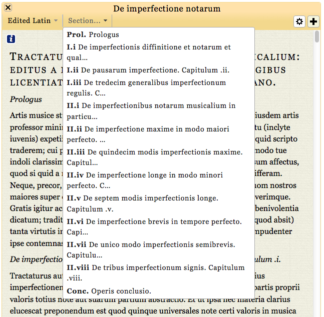

  	<div class="content">
  	  <div class="contentbox">
        <div class="explanation navigation">
          <div class="explanation-row">
            <div class="cell"></div>
            <div class="cell"><a href="../#">Up (website guide)</a></div>
            <div class="cell"></div>
          </div>
          <div class="explanation-row">
            <div class="cell"><a href="1.html">Back (view menu)</a></div>
            <div class="cell"></div>
            <div class="cell"><a href="4.html">Next (view options)</a></div>
          </div>
        </div>
        <h3>The edition pages: the navigation menu</h3>
        <p>You can move around the edition using the scroll bars on the
          right of each pane, the arrow keys on many keyboards, or the
          scroll wheel on a mouse, but we also provide the option of
          jumping to the beginning of any chapter in the current treatise
          by clicking on it in the navigation menu:</p>
        <div class="helpshot h647">
          
        </div>
        <!--end .contentbox -->
  	  </div>
    </div>
    <!-- end .content -->
   </div>